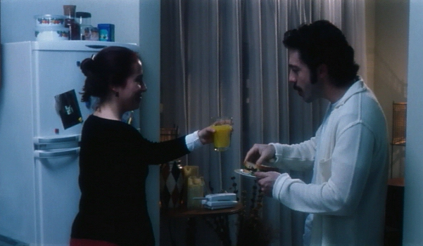

O SANDUÍCHE (El Sandwich)
(35 mm, 13 min, color, 2000)
|
Los últimos momentos de una pareja: la hora de la separación. Pero el fin de alguna cosa puede ser el comienzo de otra. Otra pareja, los primeros momentos: la hora del descubrimiento. Encuentros, separaciones y un sándwich. En el cine, el sabor está en los ojos de quien ve. |
 |
{kind=link}
{kind=link}
Dirección: Jorge Furtado
Producción Executiva: Nora Goulart y Luciana Tomasi
Guión: Jorge Furtado
Dirección de Fotografia: Alex Sernambi
Dirección de Arte: Fiapo Barth
Música: Leo Henkin
Dirección de Producción: Débora Peters
Montaje: Giba Assis Brasil y Fábio Lobanowsky
Asistente de Dirección: Alfredo Barros
Una Producción de la Casa de Cinema PoA
Elenco Principal
Janaína Kremer Motta (Ella/Márcia)
Felippe Monnaco (Él/Vítor)
Nelson Diniz (Director)
Milene Zardo (novia)
CRÉDITOS COMPLETOS
Prêmios
- 33º Festival de Brasilia, 2000:
Mejor montaje - 5º Festival de Cine Luso-brasileño, Santa Maria da Feira (Portugal), 2001:
Mejor película (jurado oficial), mejor película (Federación de Cineclubes) - 3º Festival Internacional de Cortos de Belo Horizonte, 2001:
Premio de la Crítica (mejor película de la muestra internacional) - 29º Festival Iberoamericano de Huesca (España), 2001:
Mejor Guión (Premio Sociedad General de Autores y Editores - 11º Cine Ceará, Fortaleza, 2001:
Mejor Guión, Premio Samburá de Mejor Película - 29º Festival de Gramado, 2001:
Premio Especial del Jurado de cortos gauchos. - 2º Festival Latinoamericano de Campo Grande (MS), 2001:
Mejor corto de ficción, mejor guión, mejor dirección, mejor actor (Felippe Mônnaco) - 12º Festival Internacional de Cortos, São Paulo, 2001:
Destaque del Jurado Popular, Premio Espacio Unibanco - 6º Brazilian Film Festival, Miami, 2002:
Melhor Filme (Júri Popular), Melhor Fotografia, Melhor Ator (Felippe Monnaco), Melhor Atriz (Janaína Kremer Motta) - 5º Prêmio Kodak, 2003: bloco dos 5 melhores filmes exibidos durante o ano no programa "The Short List", rede PBS, EUA.
Crítica
"Parece un chiste y talvez lo sea, pues hay mucho de lúdico en este proyecto. Lúdico y, tratándose de Jorge Furtado, lúcido, pues él, a ejemplo de lo que suele hacer en el cine y en la televisión, quiere discutir lenguaje, sinergizar formas de expresión."
(Luis Carlos Merten, O Estado de São Paulo, 03/07/2000)
"El director riograndense tiene pleno dominio de lo que hace. En los anteriores (y extraordinarios) "Barbosa" e "Isla de las Flores", maneja la narrativa para dejar sin aliento al espectador. En el último trabajo, sorprende al manipular el propio lenguaje cinematográfico, usando y abusando del metalenguaje."
(Gustavo Galvão, Correio Braziliense, 27/11/2000)
"Como aquelas bonequinhas russas, (o filme) é uma cena dentro de uma cena, dentro de uma cena, dentro de uma cena. O real se mistura ao mais real ainda e, na verdade, tudo não passa de uma sensação. A sensação maluca de se ver na tela do cinema. O cinema é isso, e esse filme me ganhou por isso. Não pela forma como os sanduíches podem ser românticos, mas pela simplicidade com que o cinema consegue ser real como um sanduíche."
(Ana Paula Penkala, PelotasNet, 20/12/2000)
26/11/2000